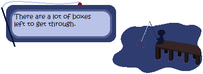

How To Remember Your Friends
Permissions (regarding fanworks, redistribution, etc.)
How To Remember Your Friends is a fisherman on a pier made as part of ゴーストマスカレード6 (Ghost Masquerade 6) by myself and StrangelyKai. It uses the Fishing For Goodies balloon.
Features
Interactive fishing mechanics
A scrapbook to view your catches
Many "fish" to collect, each with its own story
Bonus scrapbook decorations with every completed page
Reset button so you can relive your fishing glory as many times as you want
